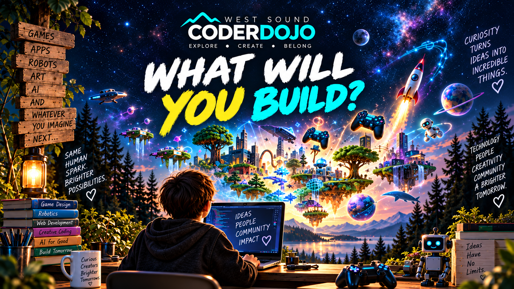

Games
Scratch, game engines, mechanics, storytelling and interaction.
There is no curriculum ladder to climb before you're allowed to make something interesting.
Pick a project, a tool, a question, or a weird idea. We will help you find a place to begin.
Scratch, game engines, mechanics, storytelling and interaction.
HTML, CSS, JavaScript, design, publishing and experimentation.
Prompting, critique, prototyping and human judgment.
Scratch, Python, JavaScript and whatever your project needs next.
Raspberry Pi, circuits, sensors, repair, cardboard and physical prototypes.
Bring a project from home, a question from school, or an idea nobody else has named yet.

We may suggest beginner, intermediate and advanced projects, but those labels are wayfinding — not identities. Move when you're ready. Loop back when you need to. Ask the person next to you. Help them five minutes later.
A game is also a lesson in iteration. A broken circuit is also persistence. Showing somebody how you solved a bug is also leadership. Curiosity travels.
Decide what matters enough to try.
Turn an idea into something you can test.
Debug the code and your assumptions.
Learn out loud and pass knowledge around the room.
Session changes, special events, AI Sprint, Raspberry Pi Jam, Scratch Day and more.